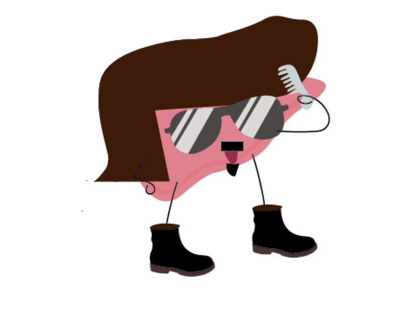

重機英雄
1980th
事蹟:帶領肝俠軍團騎乘重機追捕夜飆俠
由於帶領惡魔國的夜行俠一族滅族，導致夜行俠的親戚夜飆俠一族日漸壯大，成為惡魔國的首領家族並計畫替夜行俠復仇。夜飆俠軍團不時趁機攻打進大肝帝國，並騎著重機在城市中為非作歹，飆車躲避追擊。幸好有重機英雄帶領肝俠軍團騎乘重機追捕，肝民才得以安生。

由於帶領惡魔國的夜行俠一族滅族，導致夜行俠的親戚夜飆俠一族日漸壯大，成為惡魔國的首領家族並計畫替夜行俠復仇。夜飆俠軍團不時趁機攻打進大肝帝國，並騎著重機在城市中為非作歹，飆車躲避追擊。幸好有重機英雄帶領肝俠軍團騎乘重機追捕，肝民才得以安生。